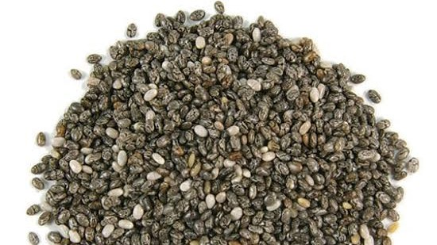

Ketahui Kandungan dan Manfaat Chia Seed untuk Kesehatan
Gaya Hidup | 7 November 2019 | 14:15 WIB
Beberapa waktu belakangan, chia seed tentu sudah menjadi sesuatu yang akrab di kalangan para pecinta makanan organik. Biji-bijian kecil mirip selasih dan berwarna hitam ini memang sering disebut-sebut sebagai superfood.
Tak heran jika dikatakan sebagai superfood, kandungan chia seed atau bijian bernama latin Salvia hispanica ini memang sangat banyak dan baik bagi tubuh. Sejumlah manfaat chia seed untuk kesehatan juga tak perlu diragukan lagi, mulai dari mencegah penyakit jantung, menjaga kadar kolesterol, hingga menurunkan risiko diabetes Nah, tapi Geng Sehat tahu enggak sih cara mengkonsumsi chia seed yang tepat dan lebih bervariasi? Berikut ini ada beberapa tipsnya.
Meskipun ukurannya kecil, chia seed penuh dengan nutrisi penting. Biji-bijian ini adalah sumber asam lemak omega-3 yang sangat baik, kaya antioksidan, serat, zat besi, dan kalsium.
Seperti kita ketahui, asam lemak omega-3 dapat membantu meningkatkan kolesterol HDL atau sering dikenal juga dengan kolesterol baik yang mencegah tubuh dari serangan jantung dan stroke.
Menurut data gizi nasional United States Department of Agriculture (USDA), dalam 1 porsi atau setara dengan 28 gram chia seed terkandung : 131 kalori, 8,4 gram lemak, 13,07 gram karbohidrat, 11,2 gram serat, 5,6 gram protein
Mengonsumsi 1 ons chia seed setiap hari akan membantu menyediakan sekitar 18% kebutuhan kalsium harian, 27% fosfor, 30% mangan, dan sedikit kalium serta tembaga. Chia seed lebih banyak menyediakan omega-3, kalsium, fosfor, dan serat dibanding flaxseed atau biji rami.
Banyaknya kandungan nutrisi dalam chia seed tentu membuat manfaatnya tidak perlu diragukan lagi. Berikut ini sejumlah manfaat chia seed untuk kesehatan:
1. Menurunkan berat badan
Makanan yang tinggi serat dapat membantu orang merasa kenyang lebih lama. Dan biasanya juga rendah kalori. Peningkatan asupan serat dan diet tinggi serat telah terbukti dapat membantu menurunkan berat badan.
Biji chia mengandung 5 gram serat per sendok makan dan juga tinggi asam lemak omega 3 serta asam linoleat yang berguna untuk membantu menurunkan berat badan. Ketika dikonsumsi bersamaan dengan air, biji chia juga dapat berubah menyerupai gel, sehingga membuat tubuh lebih lambat ketika mecernanya. Hal ini tentu saja dapat membuat rasa kenyang bertahan lebih lama.
2. Mencegah divertikulosis
Diet tinggi serat telah terbukti dapat mengurangi prevalansi terjadinya divertikulitis (peradangan atau infeksi yang terjadi pada divertikula, yaitu kantong-kantong pada usus besar) dengan cara menyerap air di usus besar dan membuat pergerakan usus lebih mudah dilewati.
Mengonsumsi makanan sehat dan dipenuhi serat dengan banyak buah dan sayuran dapat mengurangi tekanan dan peradangan di usus besar. Penyebab pasti dari divertikular sebenarnya belum diketahui. Akan tetapi, kondisi ini seringkali dikaitkan dengan kebiasaan konsumsi rendah serat.
3. Mengurangi risiko penyakit kardiovaskular dan kolesterol
Penngkatan asupan serat telah terbukti dapat menurunkan tekanan darah dan kadar kolesterol. Sebuah tinjauan terhadap 67 uji coba terkontrol menemukan bahwa peningkatan asupan serat 10 gram per hari yang sederhana dapat menurunkan LDL atau kolesterol jahat, serta kolesterol secara keseluruhan.